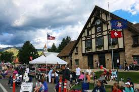
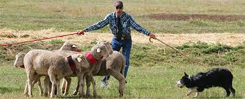
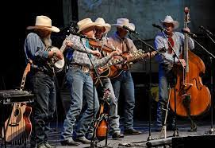

Heber City's History
In 1862 the Utah legislature created Wasatch County and made Heber City the county seat.
At the time the county was created there were more than 1,000 people living in the area.
Heber City was incorporated as a town in 1889 and as a city in 1901.
As in other Mormon communities, religion played an important role in Heber City. In 1867 Brigham Young
called Abram Hatch, a businessman from Lehi, to be bishop of Heber City’s ward, and ten years later he became a
stake president. Hatch, like the church leaders who followed him, ...played not only an important religious role but
was also a leading merchant and elected official during and after his release from his religious calling in 1901. After only
five years in the area, William H. Smart, another imported stake president, was called to the Uinta Basin, and Joseph R. Murdock, a local businessman,
became the local stake president in 1906.
The Heber City area economy depended on agriculture, livestock, and dairying. Once the Rio Grande Western railway track was completed in 1899, the city
became a shipping center for agricultural products. For example, in 1915 the D&RGW could boast that Heber annually shipped 360 cars of sheep, 280 cars of hay,
40 cars of cattle, and 60 cars of sugar beets. As Heber grew, local residents and imports started hotels, retail stores, markets, lumberyards, banks, and other businesses.
The local weekly newspaper, The Wasatch Wave, began publishing in 1889. Elementary schools, middle schools, and eventually a high school trained the young. The local chamber of
commerce was active in promoting the tourist industry and was pleased when U. S. Highway 40 passed through the community. In the 1990s Heber City continues as an agricultural center, an
attractive place for tourists to visit, and a bedroom community for the Salt Lake and Utah valleys.


Historical Demographic (population)
| 1890 | 1900 | 4,736 | 3,595 |
|---|
*population counting all of Wasatch County
Today's Demographic
| Population | Median Age | Poverty Rate | Median Household Income | Median Property Value | Number of Employees | 15,056 | 27.6 | 9.25% | $69,437 | $313,800 | 7,695 |
|---|
Heber City's current census HERE
Current Events
April 8: Lakeside Limited Train Ride
April 8: Deer Creek Express Train Ride
April 10: Mozzarella Cheese Making Class
April 20: Heber Valley Chamber of Commerce Luncheon
Check out our events calendar HERE!
Popular Events
Midway Swiss Days Fesitval
Swiss Days is an annual event that takes place the Friday and Saturday before Labor Day each. The citizens of Midway spend countless hours baking goods, preparing food, and volunteering to ensure the success of the event. Swiss Days includes a 10k race, a HUGE outdoor craft fair, a parade, live entertainment and so much more.
Soldier Hollow Classic
Watching world-class sheep dogs at work will take your breath away – but that’s just the beginning at the Soldier Hollow Classic Sheepdog Championship! Since 2003, the Soldier Hollow Classic Sheepdog Championship has been an exciting showcase of the human-canine bond – luring thousands of spectators annually to Midway to catch these dogs and handlers in action.
Cowboy Poetry
The Heber Valley Music & Cowboy Poetry Gathering began as a small cultural festival at the Midway Community Center to celebrate the heritage of the cowboy way and to ensure that it doesn’t get lost in the fold of new tech and the faster pace of life. The festival has now blossomed into a multi-day festival stretching out over the Heber Valley at nine venues—one of which is even the Heber Valley Railroad. More than 12,000 patrons not only come from all over the West and the United States to partake in the weekend, they often look forward to it throughout the year.